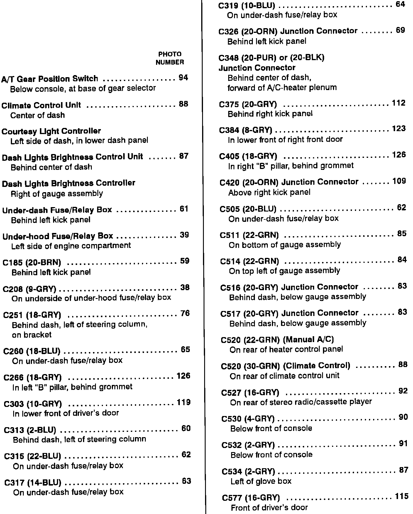
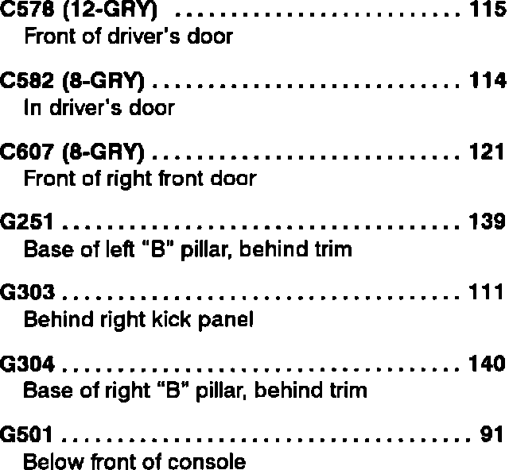

Dash, Console, Glove Box and Ashtray
Dash, Console, Glove Box And Ashtray Lamps, Component Location Index (A Thru C557):

Dash, Console, Glove Box And Ashtray Lamps, Component Location Index (C578 Thru G501):


